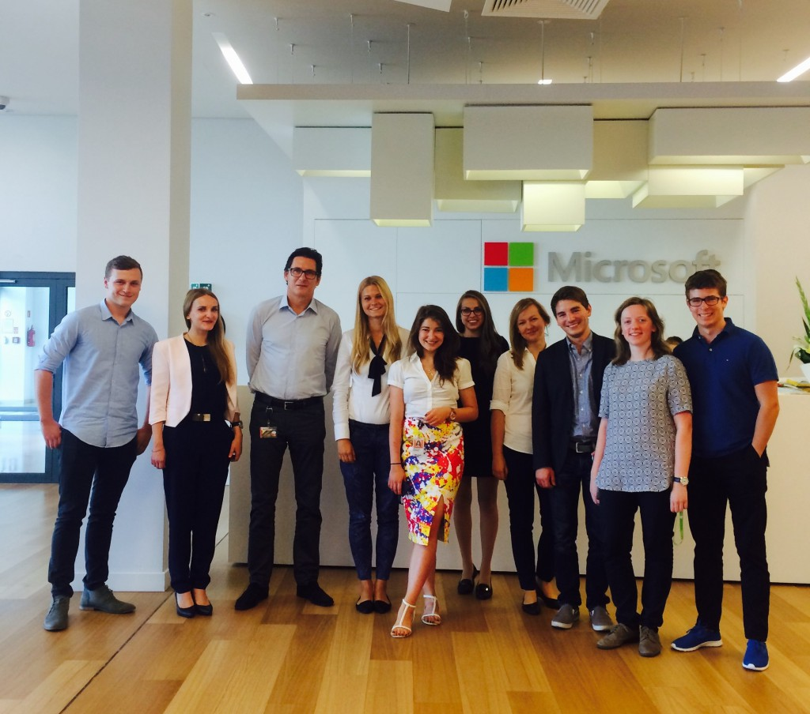
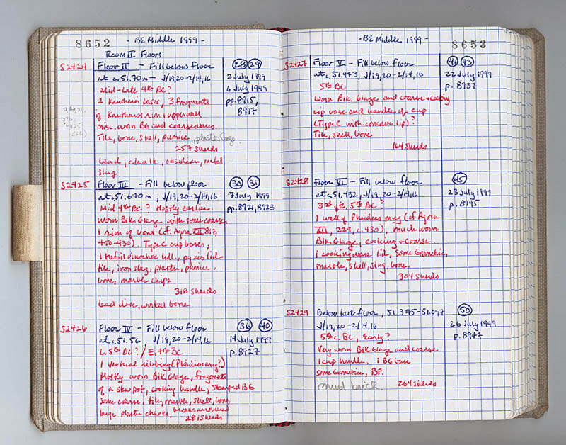

Helpful Class Sites
Home
|
Helpful Class Sites
|
Web Design Info
|
Dream Vacation
On this page, I have listed one site for each of the classes I am taking this semester. There is also a little information about each.
- Britanica
-
This site discusses the basics of the first few chapters of government and economy. It also discusses the relationship between the government itself and the economy which it controls. The major topics are discussed in detailed paragraphs and the vocabulary is defined on the page when clicked.
I can use this site to study for the first few tests in Honors economics. It will be extremely useful for finding new information and getting a more detailed explanation on old information.
- Team Tree House
-
This website offers courses that follow a specific pathway to teach web design. The topics range from an introduction from html to animation in css. The home page has basic information about web design, including entry level salaries and possible companies to work for.
This website would be useful when starting a new avenue of web design. This would not necessarily be helpful for looking up one topic, as I would have to search through all of the tutorials to find it.
- College Board: Bigfuture
-
This website gives basic information on how to obtain an internship as a student. It includes student testimonials on their internship experiences and places to search for internships. The sidebar also links to important information to have as a high school student
This website would have been helpful a few weeks ago when I was still looking for an internship. The information given is very basic in regards to what to do once an internship has been found. There are links available to match prospective students with internships.

- Lib Guides
-
This website includes a compilation of information about conducting research from finding an idea to fully citing sources. There is also specific information for research in the humanities, social sciences, and the sciences. The information is broken up based steps of the research process and would be very easy to navigate.
This website will definitely be helpful while writing my research paper this semester. I can quickly access specific information about the writing process without having to contact my teachers or my peers.

© All rights reserved.
Please email the webmaster at jasmine.brown@kmhsmagnet.com with any questions or comments.